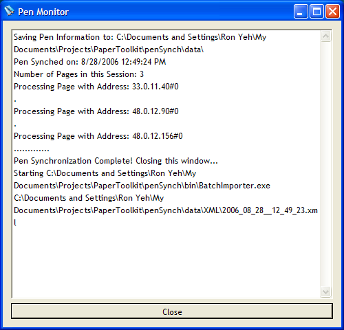

Accessing Pen Data in Batched Mode
Note: Install the Nokia (or Logitech) software before following these directions. The Anoto SDK may also be required, especially if you receive errors in step 5.
- In this tutorial, we explain how to configure R3 so that pen data is uploaded to the toolkit every time you synchronize your pen with your PC. This works with both the Logitech IO2 and Nokia SU-1B pens. However, we will only use the Nokia in our example. The Logitech procedure is the same.
- The Anoto system uses COM objects and the Windows Registry to figure out where to direct incoming pen data. When you install the Nokia software, the Windows Registry will point to the Nokia software. Thus, every time you plug your pen into the cradle, your handwritten data will show up in the Nokia browser. Since the Nokia and Logitech software are not programmable, we will want to redirect the handwritten data to R3.
- To use the pen data through R3, we need to tell the Anoto server to send data to a different location.
- Navigate to PaperToolkit\penSynch\bin (PaperToolkit is where you downloaded and compiled the R3 source code).

- Run Registration.exe. A command-line window will pop up, asking you if you want to add some registry information to the Windows Registry. Click Yes.
- Once the command-line window disappears, you are done!
If you are curious what we added to the registry, open PaperToolkit\penSynch\RegisterClassIDProgIDMappings.reg in a text editor. Basically, we are telling the Registry that our software is called "R3PenMonitor" and it is located at PaperToolkit\penSynch\bin\Pen Monitor.dll. Additionally, PenRequestsDir is set to PaperToolkit\penSynch\data\. This registry file is generated when you run Registration.exe, so you will not find the file if you have not completed step 5.
This means that the Anoto server will expect to find our pen monitor software in a subdirectory of wherever you installed the toolkit! If you ever move the location of the toolkit, remember to run Registration.exe again.
Try it out
- Take a look at PaperToolkit\penSynch\PADs. These are the different Anoto notebooks that we currently support. If you would like us to support another notebook, let us know.... It's not difficult to update the Pen Monitor (we can even teach you). In this example, we will use the Mead 5x8 notebook.
- If you have a Mead 5x8 notebook, pick your favorite page and scribble something on it.
- Make sure your Pen is NOT in streaming mode when you drop it into the cradle! This usually crashes the Anoto server.
- Drop your pen into the cradle. The Nokia (or Logitech) dialog will pop up, letting you know that pen data is being uploaded.
- Then, the R3 Pen Monitor dialog will pop up.

Once the dialog disappears (automatically), your pen data has been processed by R3's Pen Monitor.
- Navigate to PaperToolkit\penSynch\data. You will see Requests.log. If you inspect that file, you will see some information detailing the most recent pen synch, including the PenID and the time of synchronization.
- Go to PaperToolkit\penSynch\data\XML. You will find an XML file which completely describes the handwriting data that was uploaded to R3.

It contains timestamps and locations for every single stroke. You can view this file through Firefox or MSIE, and can parse this XML file with any standard Java XML parser. Every time you synchronize your pen, a new XML file will be created in this directory.
- At this point, you are done...especially if you are happy parsing this XML data! In a later tutorial, we explain higher-level ways to access this data through the toolkit.
Ron B. Yeh